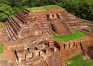
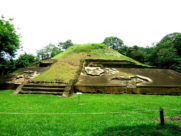

|
Los sitios arqueológicos de El Salvador son parte de las opciones para aquellos turistas que deciden conocer la cultura del país. En estos sitios encontramos muchos detalles de interés sobre las culturas indígenas que habitaron en alguna época del pasado nuestro país. En El Salvador existen algunos sitios arqueológicos, los cuales forman parte de la Ruta Maya de El Salvador y curiosamente se encuentran principalmente en la zona occidental del país. Las civilizaciones Maya, Pipil y Lenca, formaron sus asentamientos en esta tierra, donde todavía se conservan algunos de sus centros ceremoniales tales como Joya de Cerén, San Andrés, Tazumal, Casa Blanca y Sihuatán. Estos sitios son bastante visitados por los turistas y también por estudiantes como parte del programa educativo para conocer la cultura del país. En los sitios arqueológicos es posible conocer cómo vivían las sociedades que habitaron esta tierra antes de la llegada de los españoles en 1521, ya que es importante conocer los centros en los cuales desarrollaban la vida estos grupos, así como sus costumbres y tradiciones, las cuales hoy en día sobreviven algunas. Sin duda alguna estos lugares nos permiten conocer los orígenes de la cultura salvadoreña y nos permite conocer también algunos detalles relevantes del por qué las civilizaciones antiguas se comportaban de la manera en que lo hacían. Los sitios ceremoniales de la culturas precolombinas son parte importante de nuestra historia, algunos pueblos todavía conservar el nombre que tenían en la antigüedad y otros se han unido a un nombre de santos dados por los españoles. Dentro de estos sitios destaca Joya de Cerén, el cual fue descubierto en 1976, y declarado Patrimonio de la Humanidad en 1993 por la UNESCO. Este es el único espacio donde se conservan evidencias de la vida cotidiana de los pueblos mayas que residieron en la zona hace más de 1600 años. Esta ciudad fue cubierta por las cenizas producidas en una erupción del volcán de Ilopango en el siglo VII d.C. Lo sorprendente es que los arqueólogos expertos aseguran que los aldeanos lograron huir a tiempo ya que no se han encontrado restos de cuerpos humanos. Te invitamos a conocer los sitios arqueológicos de El Salvador en esta sección. |
|  | |||
| San andres | Joya de Ceren | El Tazumal | Cihuatan |
|  | |||
| Casa Blanca | |||